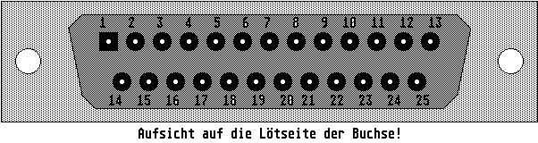

Previous
Next
TOC
Die Pinbelegung der Falcon030 Centronics Schnittstelle
1 Strobe
11 Busy
2 Datenbit 0
12-16 Not Connected
3 Datenbit 1
17 Select
4 Datenbit 2
18-25 Ground
5 Datenbit 3
6 Datenbit 4
7 Datenbit 5
8 Datenbit 6
9 Datenbit 7
10 Acknowledge

Kapitel Die Pinbelegung der F030 Centronics Schnittstelle, Seite 1